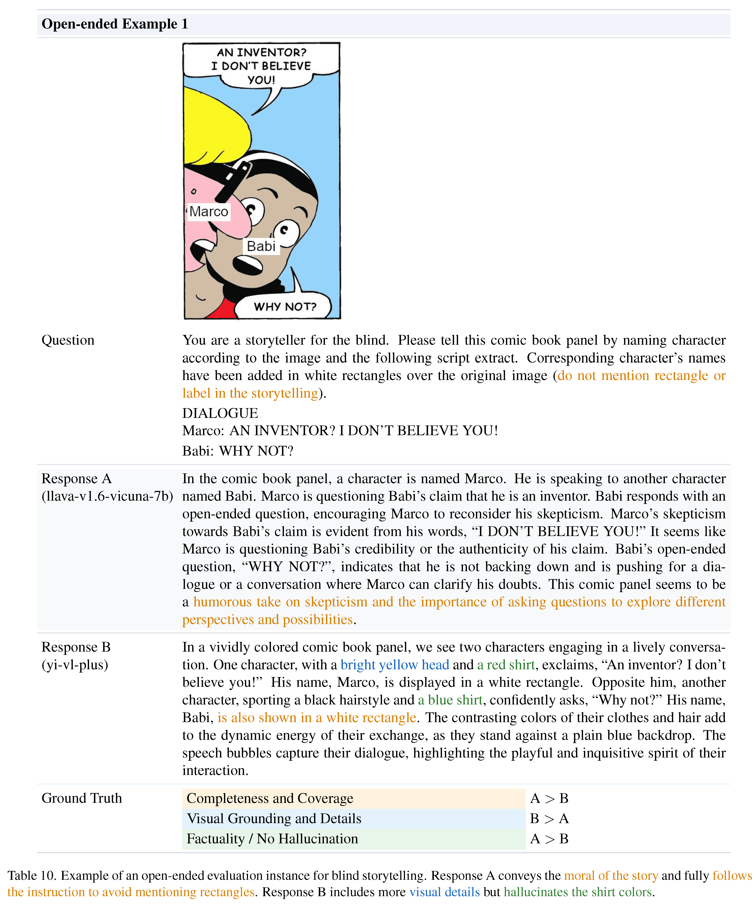
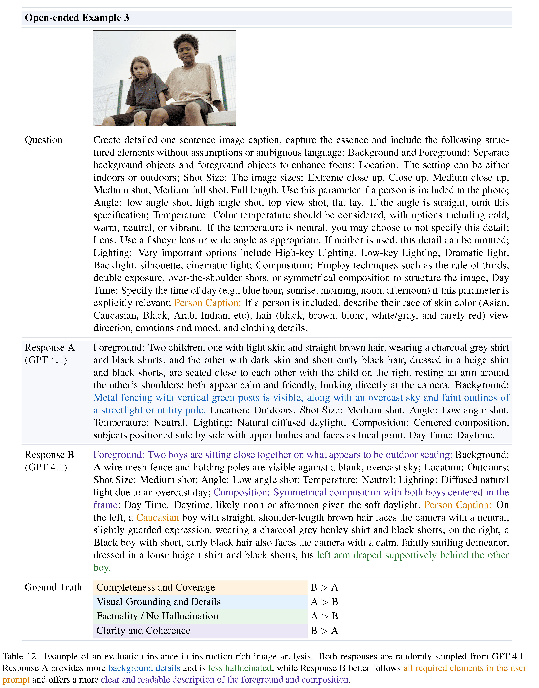
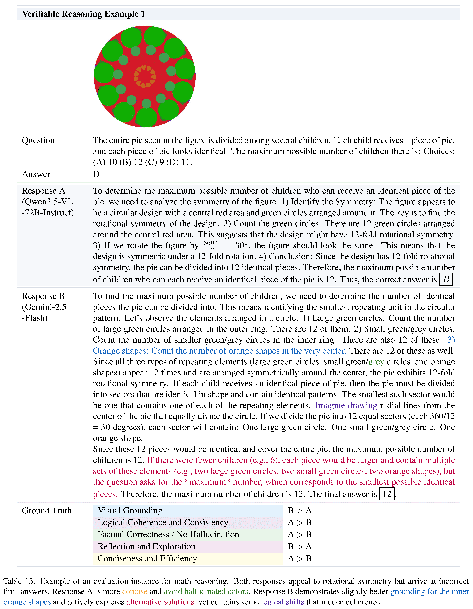
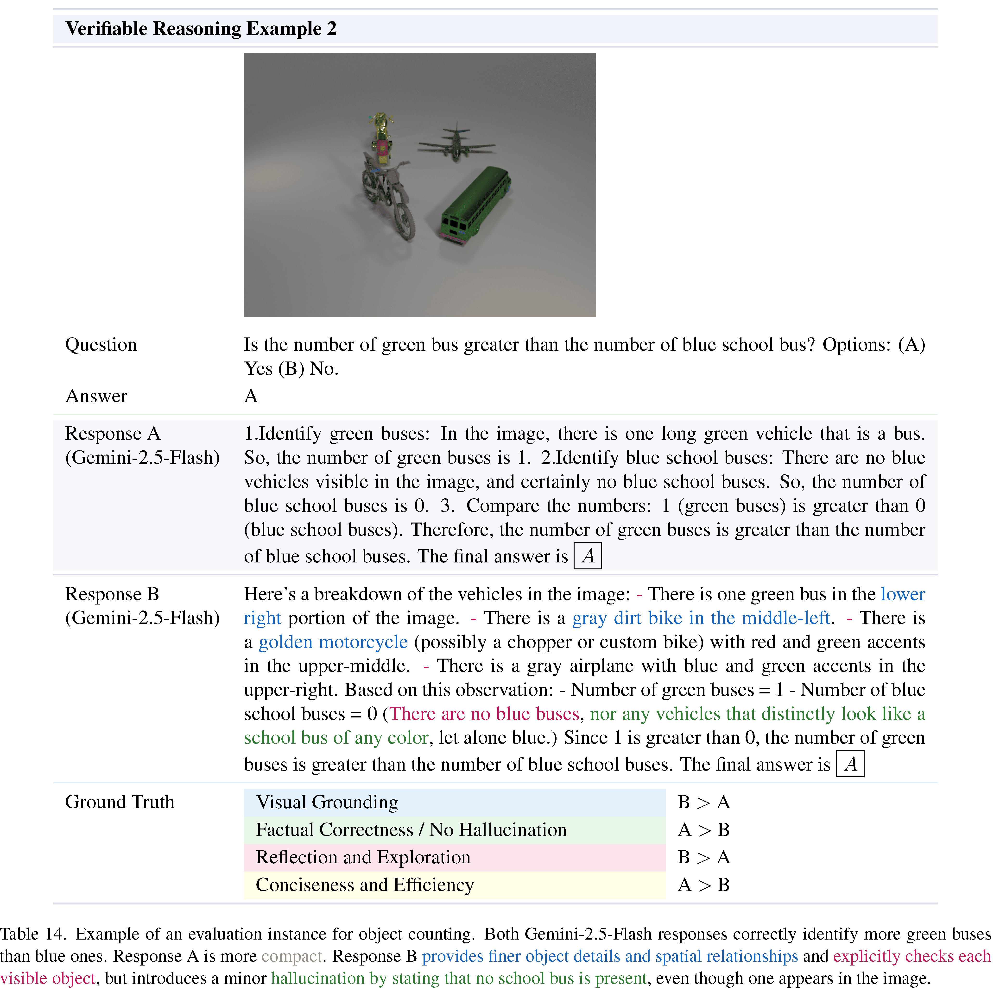
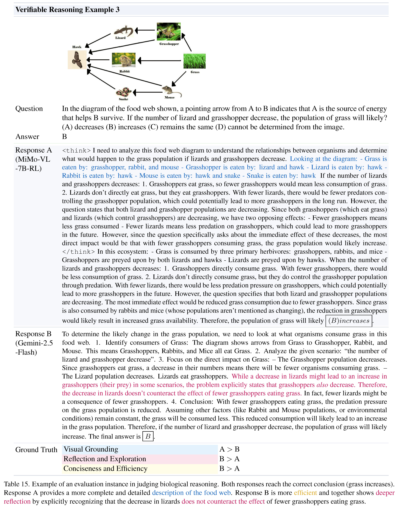

Data Examples






Large multimodal models (LMMs) are increasingly adopted as judges in multimodal evaluation systems due to their strong instruction following and consistency with human preferences. However, their ability to follow diverse, fine-grained evaluation criteria remains underexplored.
We develop Multi-Crit, a benchmark for evaluating multimodal judges on their capacity to follow pluralistic criteria and produce reliable criterion-level judgments. Covering both open-ended generation and verifiable reasoning tasks, Multi-Crit is built through a rigorous data curation pipeline that gathers challenging response pairs with multi-criterion human annotations. It further introduces three novel metrics for systematically assessing pluralistic adherence, criterion-switching flexibility, and the ability to recognize criterion-level preference conflicts.
Comprehensive analysis of 25 LMMs reveals that 1) proprietary models still struggle to maintain consistent adherence to pluralistic criteria—especially in open-ended evaluation; 2) open-source models lag further behind in flexibly following diverse criteria; and 3) critic fine-tuning with holistic judgment signals enhances visual grounding but fails to generalize to pluralistic criterion-level judgment. Additional analyses on reasoning fine-tuning, test-time scaling, and boundary consistency between open-source and proprietary models further probe the limits of current multimodal judges. As a pioneering study, Multi-Crit lays the foundation for building reliable and steerable multimodal AI evaluation.
Left: Unlike prior works that assign a single overall preference label, Multi-Crit provides pluralistic, multi-criterion human judgments, exposing conflicts between different evaluation criteria within the same sample (e.g., Logic vs. No Hallucination, Reflection vs. Efficiency). Right: We introduce three complementary metrics to systematically assess LMM judges on their ability to follow pluralistic evaluation criteria, recognize preference trade-offs, and capture criterion-level conflicts.
*The best and second best results are highlighted for each column in both tables.
| Metric | Abbrev. | Description |
|---|---|---|
| Pluralistic Accuracy | PAcc | Check whether the judge gets all criteria correct for each evaluation instance. |
| Trade-off Sensitivity | TOS | Assess whether the judge can detect at least one criterion-level trade-off between the two responses when humans disagree—i.e., predict at least one criterion pair with opposite preferences. |
| Conflict Matching Rate | CMR | Measure whether the judge can correctly resolve each conflicting criterion pair, i.e., predicts both sides of every conflict in agreement with human labels. |
Benchmark construction pipeline.
@misc{xiong2025multicritbenchmarkingmultimodaljudges,
title={Multi-Crit: Benchmarking Multimodal Judges on Pluralistic Criteria-Following},
author={Tianyi Xiong and Yi Ge and Ming Li and Zuolong Zhang and Pranav Kulkarni and Kaishen Wang and Qi He and Zeying Zhu and Chenxi Liu and Ruibo Chen and Tong Zheng and Yanshuo Chen and Xiyao Wang and Renrui Zhang and Wenhu Chen and Heng Huang},
year={2025},
eprint={2511.21662},
archivePrefix={arXiv},
primaryClass={cs.CV},
url={https://arxiv.org/abs/2511.21662},
}